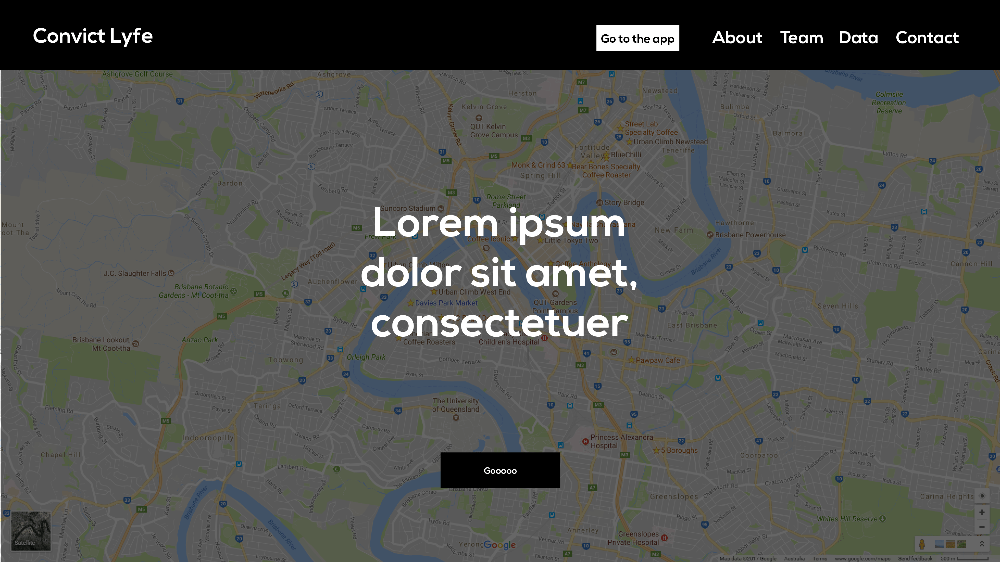
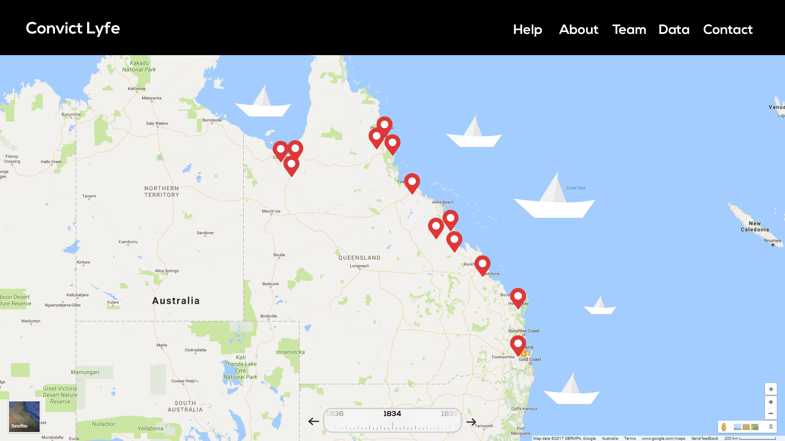
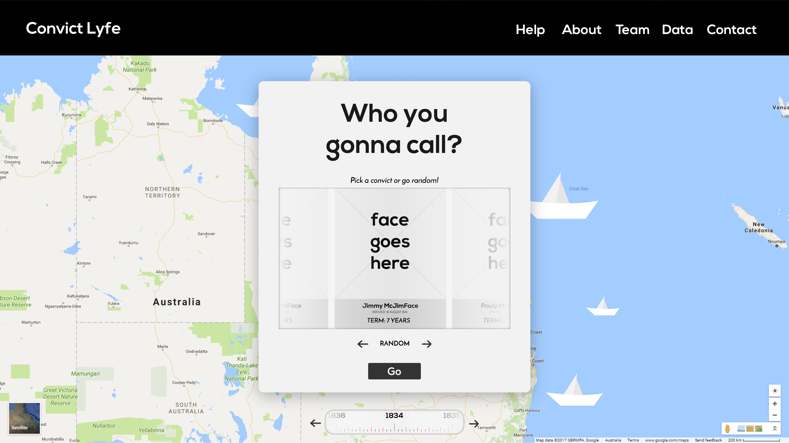

About Me
I'm a third year UQ student studying my Bachelors in Information Technology. Although I'm primarily a front-end developer, I have experience in Java, Relational Databases, Algorithms & Data Structures, and Project Management Practices (specifically, Scrum and agile).
Over the course of this semester, I was the Tech Lead and Team Leader of team SHMEL for the course DECO1800: "Design Computing Studio: 1". The nature of my career as a student has been a little jumbled around; of all the "Design Studios", I completed DECO2800 first followed by, DECO3850 then DECO3801, which will be followed by DECO3800 next semester. As a result, this course has allowed me to put my development skills into a practice in a way that I never intended; to teach git, and a handful of other tools to my first and second year team members.
Tech
- Front-End Languages (HTML, CSS, JS, Jquery)
- Front End Frameworks: Bootstrap, Angular 2+
- Back End: Nodejs, Java, SQL, RDBMS
- Algorithms and Data Structures
- Web Development tools: Sass, Pug/Jade, Gulp, npm
Design
- Illustrator Wizard
- Themes
- Interfaces
- Websites (responsive and mobile)
- App Design
- Typography and Graphic
Other
- Scrum Master
- I make a rad cup of filter coffee (v60 is my weapon of choice)
- Awesome climber (bouldering mostly)
Podcast I'm listening to right now
The Tim Ferriss ShowProject Overview
The idea of the project is to use the State Library of Queensland datasets to create an application which uses such data in an interactive and meaningful way. The datasets included Photos of the soldiers in World War One and photographs of various locations in Australia from the years 1914 to 1918. The task was to create an application that would be able to focus, manipulate, connect and present the data such that it wasn't just a few rows and columns.
Hence team SHMEL was created. The name was created with the laziest method of team creation known: using the initials of every team member. Using the British Convict Transportation Registers, we embarked on a journey to create an engaging web app ever known to high school aged students: "Convict Lyfe" (later renamed to "Convict Life" for the more tame audience).
The Project was divided into three distinct sections A, B and C. Part A involved the exposition of the idea; deciding what approach we'd start off with, who we were aiming at, etc. Part B involved the development of lower fidelity prototypes such as paper prototypes and questionnaires. Finally, Part C was where the meat of the code resided. Coding, debugging and late-night hacking sessions. This all resulted in the final product of Convict Life.
What I expected from the Course
From the beginning, I expected there to be obstacles and challenges like any other team project. While I was right, there were some bumps along the way, we came out on top and this definitely turned out to be one of the best teams I've had.
Part A: Team Formation, Design Pitch and Proposal
Team Formation
Finding a good team is easy once you realise it's up to you to create a good team. The idea of giving any ounce of trust into strangers to help you with a project can be daunting. It sure was, for this project but the sooner I started trusting them, the sooner we could all start working together.
The Pitch
Initially we all had different ideas: "I imagined it would be like this" or "I imagined it would be like that". The thing we agreed on was the dataset we were to use: the British Convict Transportation register from the SLQ datasets. Through lengthy discussion, we finally came to two ideas:
The Warden's Dashboard (my idea)
The short version: An interface showing a visualization of crimes, sentence terms and ships. This straightforward idea had in mind the requirement of using the data. The idea was to be able to sort through every single convict to find convicts, ships or sentences by any given metric for a futuristic warden who had somehow travelled back into the early convict era of Australia. With influences of other interfaces loosely based on marketing analytics and SEO, I wanted something that would look cool and was completely functional.
A quick mockup produced this (which was later used anyway)
A Day in the Life of a Convict (the other idea)
The aim of which was to give users the chance to view two different sides of the convict era: the convicts and the Indigenonus Australians. As we further developed the idea, it was clear that it didn't use the data set thoroughly enough. As a result, it was discarded, but only partially.
Convict Life (what we finally agreed on)
Convict Life allows students to see a convict colony from the eyes of a convict. It uses the slq dataset to select the years that a ship that arrived to Australia with convicts and allows the user to select a convict. The aim of the game is to "escape the convict life". Each convict chosen has a sentence that they need to serve. This is parsed and used as the user's progress. To "escape", the user needs to answer all the correct answers from the quiz.
Process Reflection
We spent a few weeks trying to decide which which idea we'd run with. This proved to be a really trying experience because team member A was emotionally attached to an idea but it didn't meet spec. The poster/pitch didn't go as amazingly as we would've expected since we spent so much time deciding what it was that we'd do. In hindsight, I'm glad we thrashed at the beginning. Really ironing out exactly what we wanted at the start was a good idea but if we could have done it more efficiently (which I know we could have) then we would have more time for the pitch. For future reference, do the poster digitially, it's not arts and crafts. That's the next part. Paper prototyping.
Part B: Prototyping, Testing and MVP
Prototyping
Prototyping involved using various different kinds of tools. Most importantly: mocking up. Being well versed in tools such as Illustrator, Marvel and Invision, I thought it would be a fantastic idea to use these apps to run a prototyping session to evaluate the intuition of a design. Given that it was a paper prototype-specific session, we decided it best to leave out mockups for the report and progress presentation.
But just because I like them, here are the mockups I designed further from the year selection:
Application Landing page
Vessel Selection
Year Selection
Convict Selection
The prototypes ended up looking great. We put a great amount of effort into creating them and meticulously cutting out each icon and diagram. Some test participants were a little harder to work with than others. Critique was well received, however, despite there being some conflicting feedback. One problem that we encountered as a team was that the feedback given to us didn't really take into account the fact that it was an MVP, designed to test the minimum viable functionality for the product. The majority of the feedback was found to be related to the appearance of the application. In future, this might be something that we should make clearer before asking for feedback.
Process Reflection
This was one of the most smooth sailing parts of the project. Everything was done to spec. Honestly, one of the most smooth prototypes I've done.
Part C: Development
This is when the real fun began. Designing the interface was one thing. Developing it was another. Initially, there was discussion as to whether or not we would use PHP. We decided not to, since there was the functionality of localStorage to be exploited in Javascript. I'll split this into a few different parts: The Interface; The Quiz and The JSON
The Interface
The idea of the interface was much like this portfolio: a one page app. Users wouldn't have to leave the website or have to reload anything because of Ajax. It actually took until the last week of the assessment for the Interface to even begin to be developed. Less about that, more about what I did.
My contribution
I coded up the initial interface which was described as "too silicon valley-y for kids". True, but still it was functional. To let the users see which vessels they could choose from, I wrote a vessel parser that would eventually output elements to the DOM. The same generally applied to the Convict selection as well as the Year selection. Most of these details were saved to localStorage.
Beyond that, there was the quiz
The Quiz and JSON
I had never developed a quiz system before so this was a real step up for me. It involved a lot of debugging and generally, it wasn't as hard as it was tedious. The code was relatively modular; functions were separate from the data so there wasn't anything that was too strongly dependent on another. In retrospect, the code looks extremely simple. Had I sat down and just properly thought it out, it would've been much easier. It would also have been much easier if we had more javascript files as opposed to having one monolothic wall of text which depicted every piece of functionality in the application. That's beside the point.
The quiz simply takes the current page and decides which questions to select from. There's a json file which contains all the questions grouped by which "location" (courthouse, jail, accommodation, etc) the user is in. The hardest part of this sections was knowing which localStorage item to choose from.
Git, Development Practices and other Crucial Tools(a course reflection)
One of the most important things about group development projects is version management. I remember doing DECO1400 and it was a tedious and trying process of deciding which version was current and which version had broken code and who did what and why and where. Git and SVN solves this. I taught my team the basics of Git, taking them through Sourcetree and Github desktop (1st place: git cli, 2nd: Sourcetree, 3rd: Github desktop). One of my team members was dealing with php and found it annoying to have to constantly upload it to the server and check it from there so I suggested xampp. I was going to take it a step further and teach them Sass or Pug but that might be for next time. The point is, there are a lot of important tools that are being used by today's professionals that aren't being taught. Lifesaving tools like git, gulp, npm, etc. Having learned these has really changed the way I develop. I'm not saying that this course didn't teach me anything; it did. It taught me how to work and communicate more effectively in teams and how to share leadership. Although none of this can be explicitly taught in a web development course, some things can be.